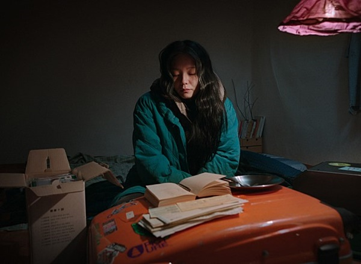

Unequal Lives in a Vertical City
How do contemporary South Korean films and documentaries use urban space to represent class inequality and social exclusion?
Background image: Seoul cityscape, Unsplash. Used for educational presentation.
Who has room to live securely?
Seoul’s modern infrastructure reflects South Korea’s economic growth, but prosperity has not brought everyone secure housing or stable work. These films show wealth through sunlight, privacy and freedom of movement, and poverty through semi-basements, temporary rooms and redevelopment zones.
As China’s neighbour, South Korea is geographically close and relatively easy to visit. Yet physical closeness does not remove cultural differences. Contemporary Korean cinema offers a way to move beyond familiar images of K-pop, technology and economic success and encounter a more complex picture of Korean society.
Compressed modernity
Chang Kyung-Sup’s “compressed modernity” describes South Korea’s rapid economic and social transformation. Development produced impressive infrastructure but also intensified competition, housing pressure and unequal access to security. The films ask who carries these costs (Chang 1999).
Why present the argument as a website?
This project was first planned as an essay, but its argument depends heavily on visual space. A five-page website makes it possible to place images beside the analysis and to move between the four films without presenting everything in one long discussion. Parasite and The Remnants remain the central case studies, while Microhabitat and Burning extend the comparison. Across these films, houses, stairs, streets and redevelopment sites are not simply settings. They reveal differences in wealth, safety, mobility and social power.
The website uses short sections, headings, captions and navigation to guide readers through the argument. Contrasting colours, large images and divided layouts reflect oppositions within the films, particularly between high and low spaces, secure and temporary housing, and redevelopment and displacement. The images are therefore more than decoration. Semi-basements, wealthy homes, demolition sites and marginal living spaces allow readers to see how class is organised spatially before reading every explanation. In this way, the website’s design supports the analysis rather than sitting separately from it.
Readers can follow the suggested order or move directly to the film that interests them. This keeps each case distinct while showing the themes they share. The format also has limits: short web sections cannot offer the same detail as a long essay, and some visual contrasts may be weaker on a mobile screen. A future version could include selected interviews with directors or production material to explain how these spaces were created. Even so, developing the website showed that layout, navigation and image selection all shape how an academic argument is understood.
A visual route through inequality

Parasite
Height, stairs, windows and rain turn two family homes into a visual map of class.

The Remnants
Testimony connects redevelopment to displacement, political power and memory.

Microhabitat & Burning
Temporary housing and unequal mobility reveal insecurity among younger adults.